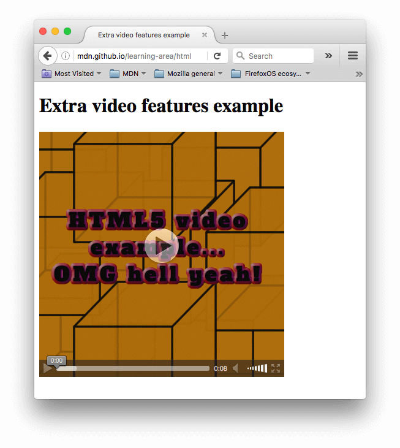

Другие параметры <video>
Есть ряд других параметры, которые вы можете включить в HTML5 элемент video. Взгляните на наш третий пример:
<video controls width="400" height="400"
autoplay loop muted
poster="poster.png">
<source src="rabbit320.mp4" type="video/mp4">
<source src="rabbit320.webm" type="video/webm">
<p>Your browser doesn't support HTML5 video. Here is a <a href="rabbit320.mp4">link to the video</a> instead.</p>
</video>На выходе получим нечто, подобное этому:
Новые параметры:
widthandheight- Вы можете контролировать размер видео либо с помощью этих атрибутов, либо с помощью CSS. В обоих случаях видео поддерживают собственное соотношение ширины и высоты — известное как соотношение сторон. Если соотношение сторон не поддерживается установленными вами размерами, видео будет увеличиваться, чтобы заполнить пространство по горизонтали, а заполненному пространству по умолчанию будет задан сплошной цвет фона.
autoplay- Этот атрибут позволяет сразу начать воспроизведение звука или видео, пока остальная часть страницы загружается. Вам не рекомендуется использовать автовоспроизведение видео (или аудио) на ваших сайтах, потому что пользователи могут найти это действительно раздражающим.
loop- Этот атрибут позволяет воспроизводить видео (или аудио) снова, когда он заканчивается. Это также может раздражать, поэтому используйте тогда, когда это действительно необходимо.
muted- Этот атрибут заставляет проигрыватель воспроизводить звук, отключённый по умолчанию.
poster- Этот атрибут принимает в качестве значения URL-адрес изображения, который будет отображаться до воспроизведения видео. Он предназначен для заставки к видео или рекламы.
preload- этот атрибут используется в элементе для буферизации больших файлов. Он может принимать одно из трёх значений:
"none"не буферизирует файл"auto"буферизирует медиафайл"metadata"буферирует только метаданные файла
Вы можете найти приведённый выше пример для воспроизведения на Github (также просмотрите исходный код.) Обратите внимание, что мы не включили атрибут autoplay в live-версию - если видео начнёт воспроизводиться, как только страница загрузится, вы не увидите заставку к видео!